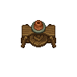

Potter's wheel
| Potter's wheel | |
|---|---|
 | |
Basic information
| |
Required Technology :
|
Clay |
Building Information
| |
Horizontal x Vertical :
|
3x3 |
Rotatable :
|
False |
Location(s)
| |
| Workyard | |

The potter's wheel is used to shape clay into ceramic bowls.
Cost
| Icon | Materials Required | Energy | Notes |
|---|---|---|---|

|
4× Flitch 2× A piece of stone 6× Nails |
Required Tech: Clay |
Recipes
| Item Produced | Materials Required | Energy | Notes |
|---|---|---|---|
| 3× Ceramic bowls |
1× Clay |
10 |
+ |
| ||||||||